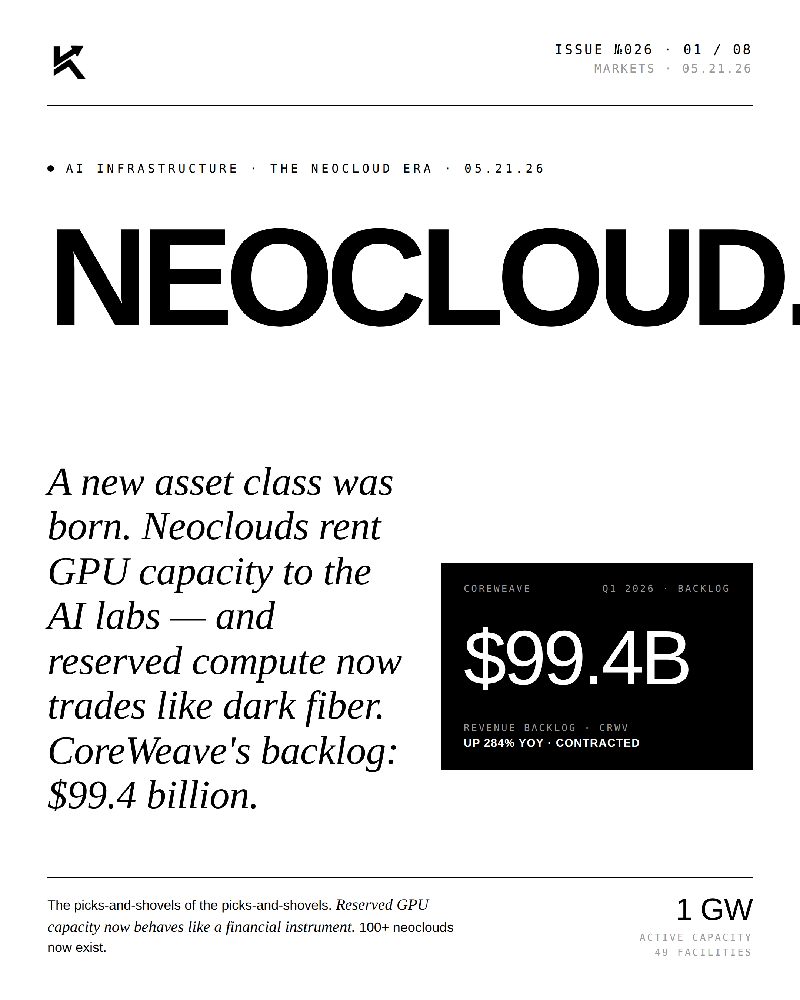
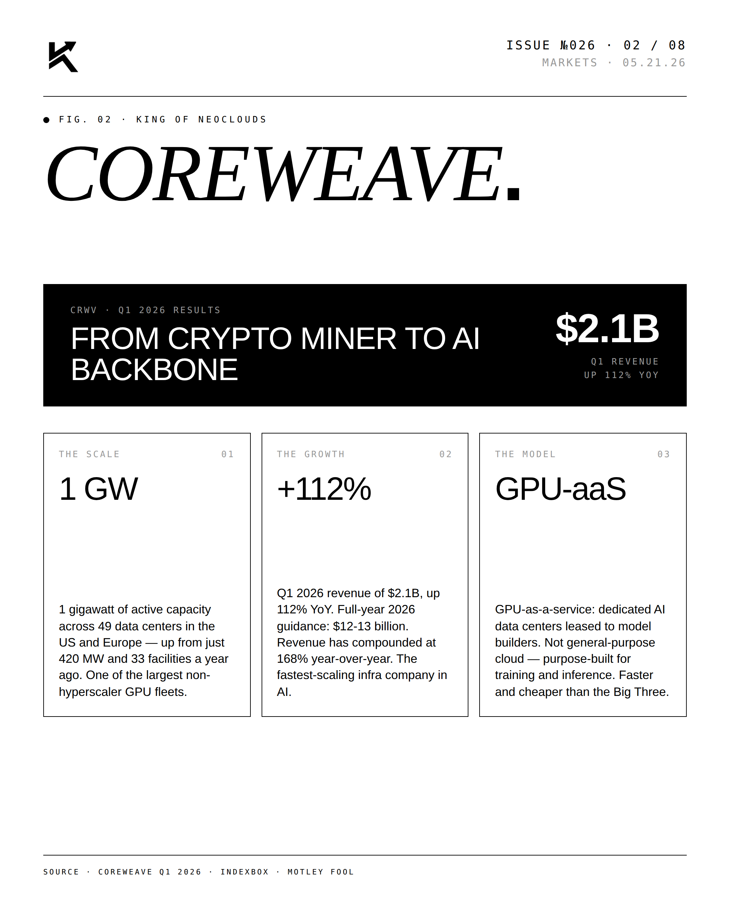
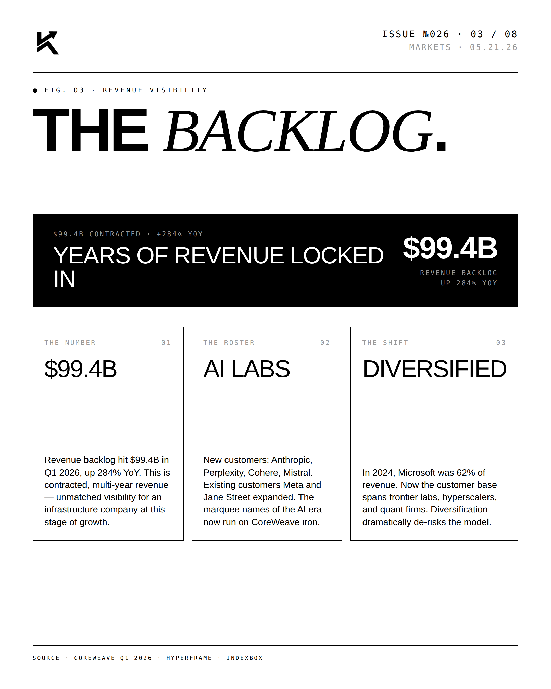
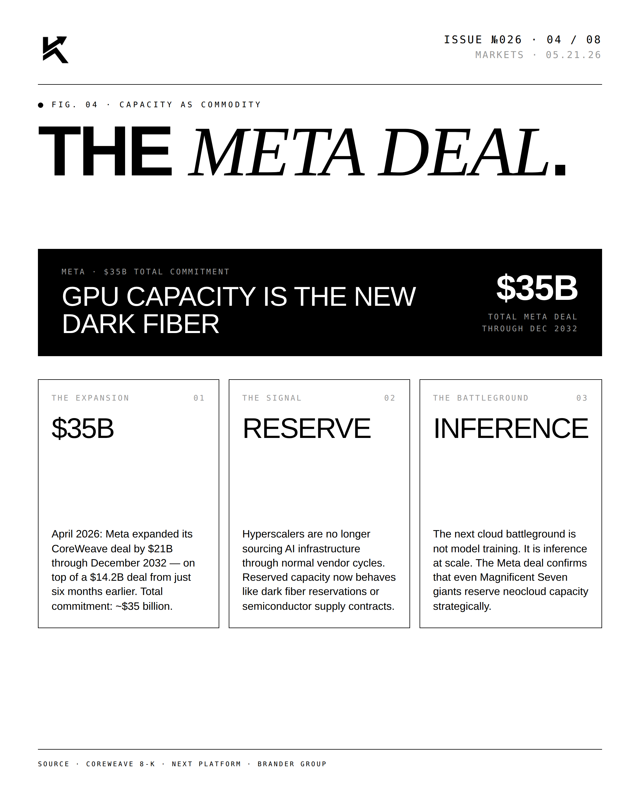
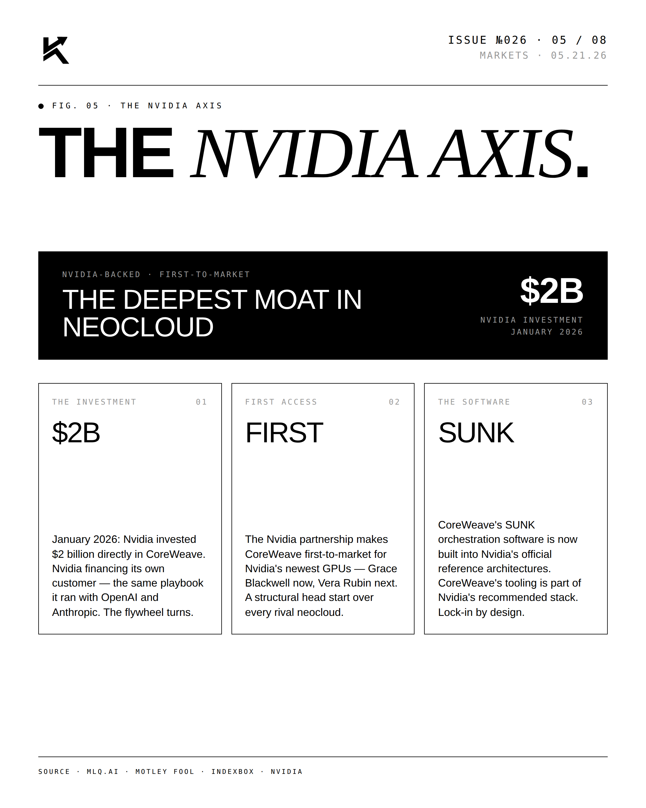
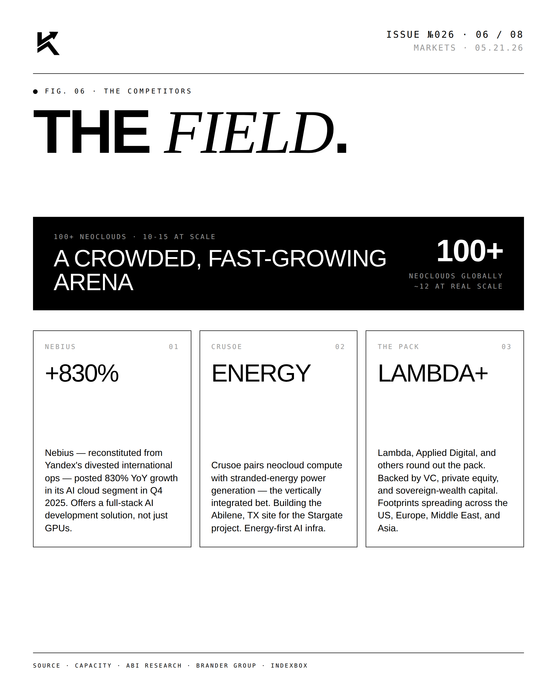
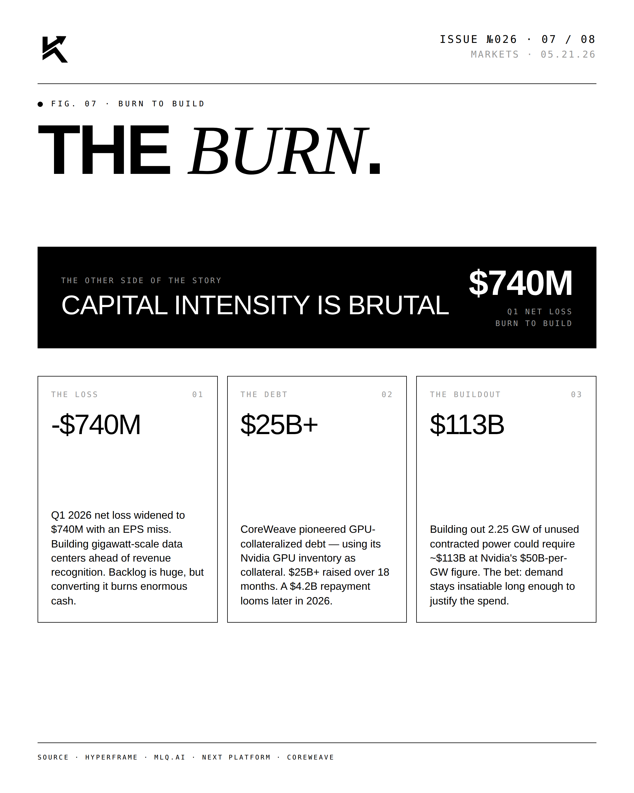
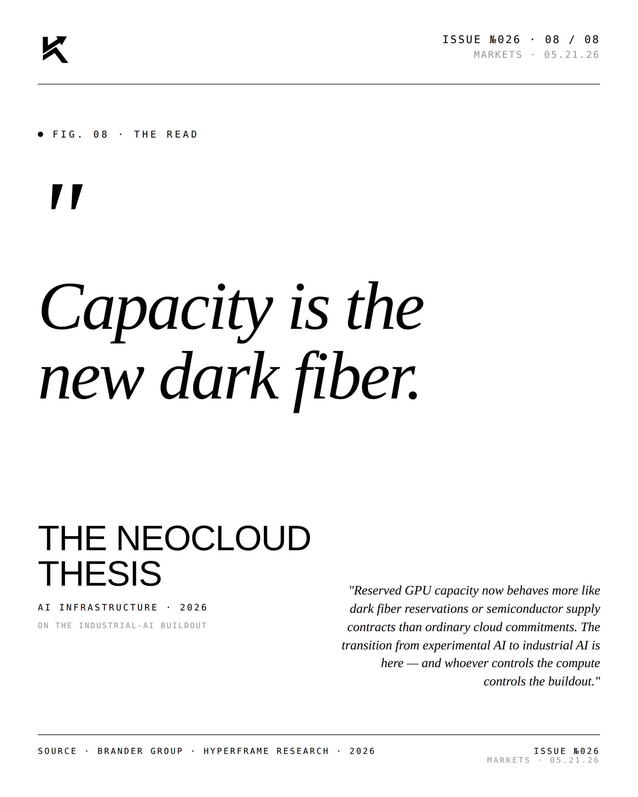

Neocloud.
A new asset class was born. Neoclouds rent GPU capacity to the AI labs — and reserved compute now trades like dark fiber. CoreWeave's backlog: $99.4 billion, up 284% YoY.

The Lead.
The picks-and-shovels of the picks-and-shovels. Reserved GPU capacity now behaves like a financial instrument, and over 100 neoclouds now exist. CoreWeave (CRWV) anchors the category with a $99.4B contracted backlog and ~1 GW of active capacity across 49 facilities.






"Capacity is the
new dark fiber."THE NEOCLOUD THESISAI Infrastructure · 2026
"Reserved GPU capacity now behaves more like dark fiber reservations or semiconductor supply contracts than ordinary cloud commitments. The transition from experimental AI to industrial AI is here — and whoever controls the compute controls the buildout." — The neocloud thesis.
